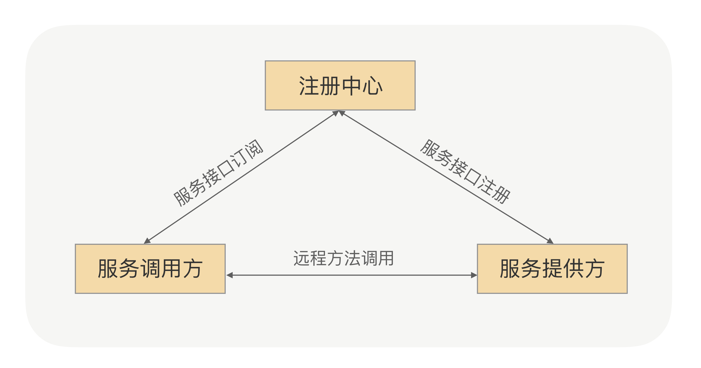
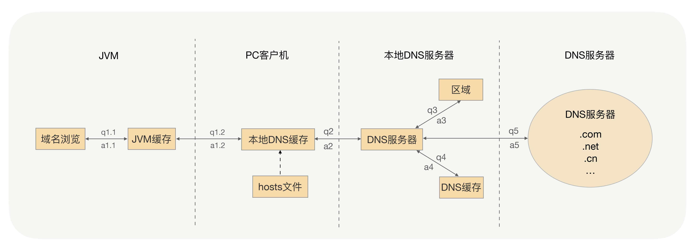
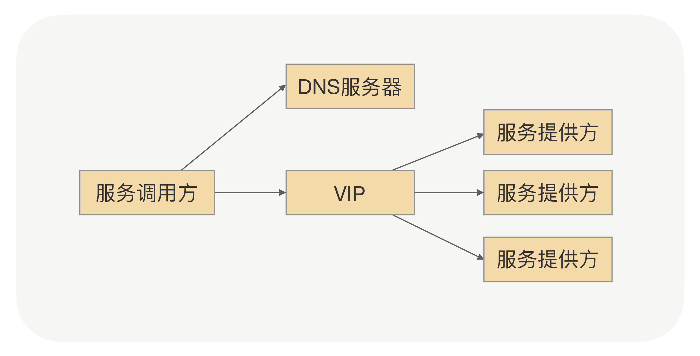
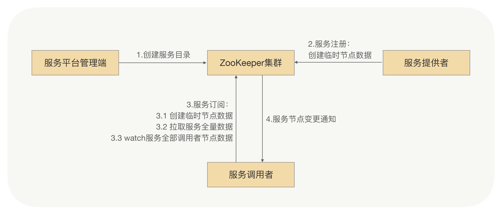
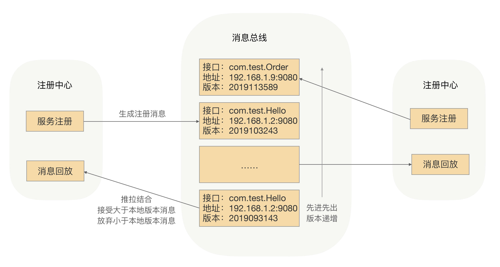

- 00 开篇词 别老想着怎么用好RPC框架，你得多花时间琢磨原理.md.html
- 01 核心原理：能否画张图解释下RPC的通信流程？.md.html
- 02 协议：怎么设计可扩展且向后兼容的协议？.md.html
- 03 序列化：对象怎么在网络中传输？.md.html
- 04 网络通信：RPC框架在网络通信上更倾向于哪种网络IO模型？.md.html
- 05 动态代理：面向接口编程，屏蔽RPC处理流程.md.html
- 06 RPC实战：剖析gRPC源码，动手实现一个完整的RPC.md.html
- 07 架构设计：设计一个灵活的RPC框架.md.html
- 08 服务发现：到底是要CP还是AP？.md.html
- 09 健康检测：这个节点都挂了，为啥还要疯狂发请求？.md.html
- 10 路由策略：怎么让请求按照设定的规则发到不同的节点上？.md.html
- 11 负载均衡：节点负载差距这么大，为什么收到的流量还一样？.md.html
- 12 异常重试：在约定时间内安全可靠地重试.md.html
- 13 优雅关闭：如何避免服务停机带来的业务损失？.md.html
- 14 优雅启动：如何避免流量打到没有启动完成的节点？.md.html
- 15 熔断限流：业务如何实现自我保护_.md.html
- 16 业务分组：如何隔离流量？.md.html
- 17 异步RPC：压榨单机吞吐量.md.html
- 18 安全体系：如何建立可靠的安全体系？.md.html
- 19 分布式环境下如何快速定位问题？.md.html
- 20 详解时钟轮在RPC中的应用.md.html
- 21 流量回放：保障业务技术升级的神器.md.html
- 22 动态分组：超高效实现秒级扩缩容.md.html
- 23 如何在没有接口的情况下进行RPC调用？.md.html
- 24 如何在线上环境里兼容多种RPC协议？.md.html
- 加餐 RPC框架代码实例详解.md.html
- 加餐 谈谈我所经历过的RPC.md.html
- 答疑课堂 基础篇与进阶篇思考题答案合集.md.html
- 结束语 学会从优秀项目的源代码中挖掘知识.md.html
- 捐赠
08 服务发现：到底是要CP还是AP？
你好，我是何小锋。在上一讲中，我讲了“怎么设计一个灵活的RPC框架”，总结起来，就是怎么在RPC框架中应用插件，用插件方式构造一个基于微内核的RPC框架，其关键点就是“插件化”。
今天，我要和你聊聊RPC里面的“服务发现”在超大规模集群的场景下所面临的挑战。
为什么需要服务发现？
先举个例子，假如你要给一位以前从未合作过的同事发邮件请求帮助，但你却没有他的邮箱地址。这个时候你会怎么办呢？如果是我，我会选择去看公司的企业“通信录”。
同理，为了高可用，在生产环境中服务提供方都是以集群的方式对外提供服务，集群里面的这些IP随时可能变化，我们也需要用一本“通信录”及时获取到对应的服务节点，这个获取的过程我们一般叫作“服务发现”。
对于服务调用方和服务提供方来说，其契约就是接口，相当于“通信录”中的姓名，服务节点就是提供该契约的一个具体实例。服务IP集合作为“通信录”中的地址，从而可以通过接口获取服务IP的集合来完成服务的发现。这就是我要说的RPC框架的服务发现机制，如下图所示：

- 服务注册：在服务提供方启动的时候，将对外暴露的接口注册到注册中心之中，注册中心将这个服务节点的IP和接口保存下来。
- 服务订阅：在服务调用方启动的时候，去注册中心查找并订阅服务提供方的IP，然后缓存到本地，并用于后续的远程调用。
为什么不使用DNS？
既然服务发现这么“厉害”，那是不是很难实现啊？其实类似机制一直在我们身边，我们回想下服务发现的本质，就是完成了接口跟服务提供者IP的映射。那我们能不能把服务提供者IP统一换成一个域名啊，利用已经成熟的DNS机制来实现？
好，先带着这个问题，简单地看下DNS的流程：

如果我们用DNS来实现服务发现，所有的服务提供者节点都配置在了同一个域名下，调用方的确可以通过DNS拿到随机的一个服务提供者的IP，并与之建立长连接，这看上去并没有太大问题，但在我们业界为什么很少用到这种方案呢？不知道你想过这个问题没有，如果没有，现在可以停下来想想这样两个问题：
- 如果这个IP端口下线了，服务调用者能否及时摘除服务节点呢？
- 如果在之前已经上线了一部分服务节点，这时我突然对这个服务进行扩容，那么新上线的服务节点能否及时接收到流量呢？
这两个问题的答案都是：“不能”。这是因为为了提升性能和减少DNS服务的压力，DNS采取了多级缓存机制，一般配置的缓存时间较长，特别是JVM的默认缓存是永久有效的，所以说服务调用者不能及时感知到服务节点的变化。
这时你可能会想，我是不是可以加一个负载均衡设备呢？将域名绑定到这台负载均衡设备上，通过DNS拿到负载均衡的IP。这样服务调用的时候，服务调用方就可以直接跟VIP建立连接，然后由VIP机器完成TCP转发，如下图所示：

这个方案确实能解决DNS遇到的一些问题，但在RPC场景里面也并不是很合适，原因有以下几点：
- 搭建负载均衡设备或TCP/IP四层代理，需求额外成本；
- 请求流量都经过负载均衡设备，多经过一次网络传输，会额外浪费些性能；
- 负载均衡添加节点和摘除节点，一般都要手动添加，当大批量扩容和下线时，会有大量的人工操作和生效延迟；
- 我们在服务治理的时候，需要更灵活的负载均衡策略，目前的负载均衡设备的算法还满足不了灵活的需求。
由此可见，DNS或者VIP方案虽然可以充当服务发现的角色，但在RPC场景里面直接用还是很难的。
基于ZooKeeper的服务发现
那么在RPC里面我们该如何实现呢？我们还是要回到服务发现的本质，就是完成接口跟服务提供者IP之间的映射。这个映射是不是就是一种命名服务？当然，我们还希望注册中心能完成实时变更推送，是不是像开源的ZooKeeper、etcd就可以实现？我很肯定地说“确实可以”。下面我就来介绍下一种基于ZooKeeper的服务发现方式。
整体的思路很简单，就是搭建一个ZooKeeper集群作为注册中心集群，服务注册的时候只需要服务节点向ZooKeeper节点写入注册信息即可，利用ZooKeeper的Watcher机制完成服务订阅与服务下发功能，整体流程如下图：

- 服务平台管理端先在ZooKeeper中创建一个服务根路径，可以根据接口名命名（例如：/service/com.demo.xxService），在这个路径再创建服务提供方目录与服务调用方目录（例如：provider、consumer），分别用来存储服务提供方的节点信息和服务调用方的节点信息。
- 当服务提供方发起注册时，会在服务提供方目录中创建一个临时节点，节点中存储该服务提供方的注册信息。
- 当服务调用方发起订阅时，则在服务调用方目录中创建一个临时节点，节点中存储该服务调用方的信息，同时服务调用方watch该服务的服务提供方目录（/service/com.demo.xxService/provider）中所有的服务节点数据。
- 当服务提供方目录下有节点数据发生变更时，ZooKeeper就会通知给发起订阅的服务调用方。
我所在的技术团队早期使用的RPC框架服务发现就是基于ZooKeeper实现的，并且还平稳运行了一年多，但后续团队的微服务化程度越来越高之后，ZooKeeper集群整体压力也越来越高，尤其在集中上线的时候越发明显。“集中爆发”是在一次大规模上线的时候，当时有超大批量的服务节点在同时发起注册操作，ZooKeeper集群的CPU突然飙升，导致ZooKeeper集群不能工作了，而且我们当时也无法立马将ZooKeeper集群重新启动，一直到ZooKeeper集群恢复后业务才能继续上线。
经过我们的排查，引发这次问题的根本原因就是ZooKeeper本身的性能问题，当连接到ZooKeeper的节点数量特别多，对ZooKeeper读写特别频繁，且ZooKeeper存储的目录达到一定数量的时候，ZooKeeper将不再稳定，CPU持续升高，最终宕机。而宕机之后，由于各业务的节点还在持续发送读写请求，刚一启动，ZooKeeper就因无法承受瞬间的读写压力，马上宕机。
这次“意外”让我们意识到，ZooKeeper集群性能显然已经无法支撑我们现有规模的服务集群了，我们需要重新考虑服务发现方案。
基于消息总线的最终一致性的注册中心
我们知道，ZooKeeper的一大特点就是强一致性，ZooKeeper集群的每个节点的数据每次发生更新操作，都会通知其它ZooKeeper节点同时执行更新。它要求保证每个节点的数据能够实时的完全一致，这也就直接导致了ZooKeeper集群性能上的下降。这就好比几个人在玩传递东西的游戏，必须这一轮每个人都拿到东西之后，所有的人才能开始下一轮，而不是说我只要获得到东西之后，就可以直接进行下一轮了。
而RPC框架的服务发现，在服务节点刚上线时，服务调用方是可以容忍在一段时间之后（比如几秒钟之后）发现这个新上线的节点的。毕竟服务节点刚上线之后的几秒内，甚至更长的一段时间内没有接收到请求流量，对整个服务集群是没有什么影响的，所以我们可以牺牲掉CP（强制一致性），而选择AP（最终一致），来换取整个注册中心集群的性能和稳定性。
那么是否有一种简单、高效，并且最终一致的更新机制，能代替ZooKeeper那种数据强一致的数据更新机制呢？
因为要求最终一致性，我们可以考虑采用消息总线机制。注册数据可以全量缓存在每个注册中心内存中，通过消息总线来同步数据。当有一个注册中心节点接收到服务节点注册时，会产生一个消息推送给消息总线，再通过消息总线通知给其它注册中心节点更新数据并进行服务下发，从而达到注册中心间数据最终一致性，具体流程如下图所示：

- 当有服务上线，注册中心节点收到注册请求，服务列表数据发生变化，会生成一个消息，推送给消息总线，每个消息都有整体递增的版本。
- 消息总线会主动推送消息到各个注册中心，同时注册中心也会定时拉取消息。对于获取到消息的在消息回放模块里面回放，只接受大于本地版本号的消息，小于本地版本号的消息直接丢弃，从而实现最终一致性。
- 消费者订阅可以从注册中心内存拿到指定接口的全部服务实例，并缓存到消费者的内存里面。
- 采用推拉模式，消费者可以及时地拿到服务实例增量变化情况，并和内存中的缓存数据进行合并。
为了性能，这里采用了两级缓存，注册中心和消费者的内存缓存，通过异步推拉模式来确保最终一致性。
另外，你也可能会想到，服务调用方拿到的服务节点不是最新的，所以目标节点存在已经下线或不提供指定接口服务的情况，这个时候有没有问题？这个问题我们放到了RPC框架里面去处理，在服务调用方发送请求到目标节点后，目标节点会进行合法性验证，如果指定接口服务不存在或正在下线，则会拒绝该请求。服务调用方收到拒绝异常后，会安全重试到其它节点。
通过消息总线的方式，我们就可以完成注册中心集群间数据变更的通知，保证数据的最终一致性，并能及时地触发注册中心的服务下发操作。在RPC领域精耕细作后，你会发现，服务发现的特性是允许我们在设计超大规模集群服务发现系统的时候，舍弃强一致性，更多地考虑系统的健壮性。最终一致性才是分布式系统设计中更为常用的策略。
总结
今天我分享了RPC框架服务发现机制，以及如何用ZooKeeper完成“服务发现”，还有ZooKeeper在超大规模集群下作为注册中心所存在的问题。
通常我们可以使用ZooKeeper、etcd或者分布式缓存（如Hazelcast）来解决事件通知问题，但当集群达到一定规模之后，依赖的ZooKeeper集群、etcd集群可能就不稳定了，无法满足我们的需求。
在超大规模的服务集群下，注册中心所面临的挑战就是超大批量服务节点同时上下线，注册中心集群接受到大量服务变更请求，集群间各节点间需要同步大量服务节点数据，最终导致如下问题：
- 注册中心负载过高；
- 各节点数据不一致；
- 服务下发不及时或下发错误的服务节点列表。
RPC框架依赖的注册中心的服务数据的一致性其实并不需要满足CP，只要满足AP即可。我们就是采用“消息总线”的通知机制，来保证注册中心数据的最终一致性，来解决这些问题的。
另外，在今天的内容中，很多知识点不只可以应用到RPC框架的“服务发现”中。例如服务节点数据的推送采用增量更新的方式，这种方式提高了注册中心“服务下发”的效率，而这种方式，你还可以利用在其它地方，比如统一配置中心，用此方式可以提升统一配置中心下发配置的效率。
课后思考
目前服务提供者上线后会自动注册到注册中心，服务调用方会自动感知到新增的实例，并且流量会很快打到该新增的实例。如果我想把某些服务提供者实例的流量切走，除了下线实例，你有没有想到其它更便捷的办法呢？
欢迎留言和我分享你的思考和疑惑，也欢迎你把文章分享给你的朋友，邀请他加入学习。我们下节课再见！
© 2019 - 2023 Liangliang Lee. Powered by gin and hexo-theme-book.